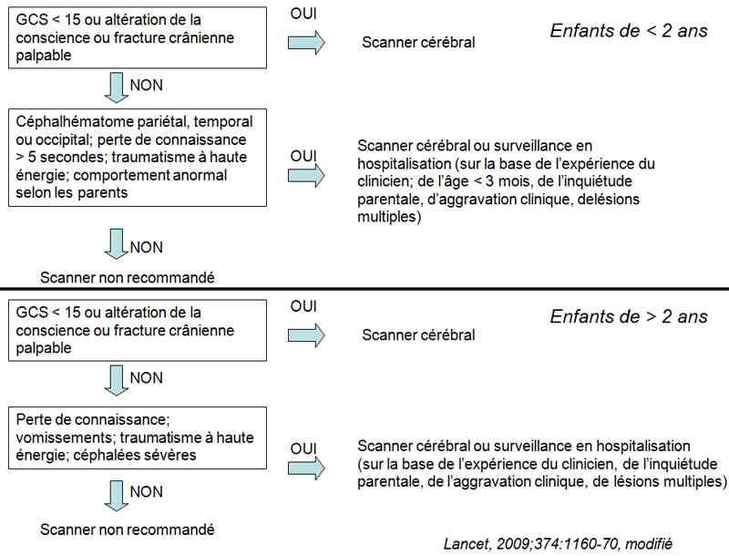
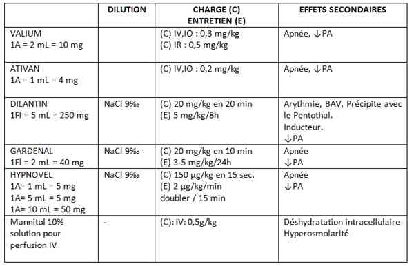

Bienvenue Sur Medical Education
Traumatisme crânien de l'enfant
EnfantSpécialité : pediatrie / traumatologie /
Points importants
-
Le traumatisme crânien est un motif fréquent de consultation aux Urgences pédiatriques
-
Un traumatisme crânien mineur est défini par un niveau normal de conscience, un examen neurologique normal et l’absence d’hématome du scalp révélateur d’une fracture crânienne
-
~ 1/500 enfants avec traumatisme crânien mineur présente une lésion intracrânienne grave
Présentation clinique / CIMU
SIGNES FONCTIONNELS
Présentation clinique / CIMU
SIGNES FONCTIONNELS
Généraux
- Céphalées
- Altération de la conscience, comportement anormal, somnolence
- Vomissements persistants
Spécifiques
- Impact, dont un céphalhématome du scalp (« bosse molle », souvent associée à une fracture sous-jacente chez le petit enfant)
- Signes de fracture crânienne (dépression ou disjonction crânienne, fracture de la base)
- Déficit neurologique
CONTEXTE
Antécédents
- Habituellement aucun
Circonstances de survenue
- Accidentelles (chute, accident de la voie publique) ou volontaires (maltraitance, négligence)…
EXAMEN CLINIQUE
- Score de Glasgow pédiatrique
- Examen neurologique
- Mensuration du périmètre crânien
- Examen de la région du traumatisme, du crâne et du visage
- Examen ORL à la recherche de fracture de la base du crâne (jetage nasal de sang ou de LCR, hémotympan, hématome péri-orbitaire)
- Examen du fond d’oeil
- Recherche de traumatismes d’autres régions du corps (notamment le rachis)
Facteurs de gravité
- Perte de conscience > 5 min
- Score de Glasgow pédiatrique < 14, ou < 15 chez un nourrisson <1 an
- Convulsions au décours du traumatisme
- Vomissements incoercibles
- Céphalées sévères
- Anomalie à l’examen neurologique
- Traumatisme à haute énergie
- Plaie pénétrante, dépression osseuse ou fontanelle tendue
- Hématome, œdème ou lacération du crâne > 5 cm chez un nourrisson < 1 an
- Hémotympan, jetage nasal de sang ou de LCR
- Lésions faciales, hématome péri-orbitaire
-
Signes d’HTIC :
-
généraux :
- céphalées / vomissements
- fontanelle bombante / disjonction des sutures / augmentation du périmètre crânien
- dégradation clinique rapide, altération de la conscience, vigilance et comportement
- convulsions
- oedème du nerf optique au F.O. (ce signe peut être tardif)
-
HTIC avérée :
- HTA avec bradycardie
- anomalies de la respiration
- ophtalmoplégie, mydriase unilatérale
-
généraux :
CIMU
- Tri 1-3
Signes paracliniques
BIOLOGIQUES
-
NFS plaquettes + hémostase (si saignement intracrânien suspecté)
-
NB : risque de déglobulisation en cas de céphalhématome sévère, circonférentiel :
-
bilan pré-transfusionnel et surveillance du taux d’hémoglobine (taux d’Hb/hémocue).
IMAGERIE
- bilan pré-transfusionnel et surveillance du taux d’hémoglobine (taux d’Hb/hémocue).
Radio de crâne
- Si céphalhématome chez le nourrisson < 1 an
Scanner cérébral si
- Durée de perte de conscience > 5 min
- Amnésie du traumatisme > 5 min
- Somnolence prolongée
- Survenue d’une convulsion au décours du traumatisme
- Score de Glasgow pédiatrique < 14, ou < 15 chez un nourrisson < 1 an
- Suspicion de dépression osseuse ou de plaie pénétrante ou de fontanelle tendue
- Fracture du crâne
- Signes neurologiques focaux
- Hématome, œdème ou lacérations cérébrales > 5 cm chez un nourrisson < 1 an
- Traumatisme à haute énergie (AVP sévère, chute > 3m)
NB : voir algorithme
 _856 Algorithme Algorithme : traumatisme crânien de l'enfant
Radio du squelette entier(âge < 1 an) si
- Suspicion de maltraitance (traumatismes répétés ou négligence des parents ou incohérence entre mécanisme rapporté par les parents et sévérité du traumatisme)
Diagnostic étiologique
Bénin
- Absence de symptômes, GCS 15, examen neurologique normal
- < 3 épisodes de vomissements
- Perte de conscience < 5 min
Modéré
- Perte de conscience > 5 min
- Léthargie progressive
- Céphalée progressive
- > 3 épisodes de vomissements
- Amnésie
- Convulsions
- Polytraumatisme
- Blessures faciales sérieuses
- Signes de fracture de la base du crâne (écoulement du LCR par le conduit auditif, otorragie…)
- Maltraitance présumée
- Score de 11 à 14 sur le Score de Glasgow pédiatrique
Grave
- Score de 10 ou moins sur le Score de Glasgow pédiatrique ou dégradation neurologique
- Signes neurologiques focaux
- Blessure crânienne par pénétration
- Enfoncement localisé palpable
- Fracture ouverte du crâne
Traitement
TRAITEMENT PREHOSPITALIER / INTRAHOSPITALIER
Stabilisation initiale
-
Si Glasgow < 8 :
- intubation et maintien de la SpO2 > 90%
-
Si HTIC :
- hyperventilation
- tête dans l’axe, surélevée de 30°
- mannitol 0,5g/kg
-
Si convulsions :
- diazépam 0,5 mg/kg sans dépasser 10 mg, à refaire une fois (autre BZD possible) si inefficace
-
puis:
- phénobarbital dose de charge IV 15 mg/kg en 20 min
- phénytoïne dose de charge IV 15 mg/kg en 20 min puis 5 mg/kg/8h
- si persistance des convulsions : intubation et ventilation
Suivi du traitement
- Proclive 30°, tête dans l’axe
- Minimum de stimulations tactiles, sonores et lumineuses
- Regrouper les soins et gestes invasifs
- Prévention des escarres, kératites et thromboses (voir le chapitre « coma de l’enfant »)
MEDICAMENTS
 _855 Tableau Médicaments : traumatisme crânien de l'enfant
Surveillance
CLINIQUE
-
Glasgow Coma Score pédiatrique
-
Neurologique
EXAMENS PARACLINIQUES SIMPLES
-
Si facteurs de risque :
-
enfant scopé avec prise de constantes toutes les heures à toutes les 3 heures selon gravité (FR, SpO2, FC, PA, T°C, diurèse)
Devenir / orientation
CRITERES D’ADMISSION
- enfant scopé avec prise de constantes toutes les heures à toutes les 3 heures selon gravité (FR, SpO2, FC, PA, T°C, diurèse)
Devenir / orientation
CRITERES D’ADMISSION
Réanimation
- Traumatismes classés comme modérés ou graves
- Signes d’HTIC
UHCD
- La surveillance en UHCD est une alternative à la pratique d’un scanner cérébral
CRITERES DE SORTIE
- Glasgow Coma Scorepédiatrique= 15
- Examen neurologique normal
- Parents fiables pour la surveillance au domicile
RECOMMANDATIONS DE SORTIE
- Réveiller l’enfant qui s’est fait mal à la tête et lui parler toutes les trois heures environ
- Ne donner aucun sédatif, tranquillisant
-
Retourner au service des urgences si :
- vomissements qui se répètent plus de deux fois, ou qui reviennent après avoir cessé
- troubles de la vision
- aggravation du mal de tête
- mouvement anormaux,troubles de la marche/parole
- confusion
- difficulté à le(la) réveiller
- changements de comportement : agitation ou au contraire calme inhabituel.
- convulsions ou mouvements involontaires répétés des bras et des jambes : placer l’enfant dans un endroit où il ne peut pas tomber. Etre certain qu’il a suffisamment d’air pour respirer. Rester avec lui jusqu’à la fin de la convulsion et appeler ou faire appeler dès que possible le 15 ou votre médecin traitant, ou ramener l’enfant s’il a repris complètement connaissance
Mécanisme / description
-
Les traumatismes crâniens sont la conséquence :
-
de chocs directs sur la tête avec le maximum de lésions en regard du point d’impact et des lésions de contrecoup diamétralement opposées
-
ou de chocs indirects par phénomènes d’accélération ou décélération avec contusion du parenchyme sur les reliefs osseux intracrâniens et (ou) cisaillement des axones et de la substance blanche
-
ou bien de l’association des deux mécanismes.
-
Le TC peut comporter 2 types de lésions :
-
les lésions primaires engendrées par l’impact (embarrure, hématome …)
-
les lésions secondaires pendant les heures et jours qui suivent, liées à des facteurs soit systémiques (HoTA, hypoxie…), soit intracrâniens (oedème cérébral, crises convulsives….)
-
Dans les 2 cas, la voie finale commune est constamment ischémique avec des conséquences sur la morbidité et la mortalité.
-
Il est donc impératif de corriger au mieux les facteurs systémiques et d’organiser une surveillance clinique et radiologique adéquate pour détecter à temps les lésions secondaires intracrâniennes.
Algorithme
-
Algorithme
- de chocs directs sur la tête avec le maximum de lésions en regard du point d’impact et des lésions de contrecoup diamétralement opposées
- ou de chocs indirects par phénomènes d’accélération ou décélération avec contusion du parenchyme sur les reliefs osseux intracrâniens et (ou) cisaillement des axones et de la substance blanche
- ou bien de l’association des deux mécanismes.
- les lésions primaires engendrées par l’impact (embarrure, hématome …)
- les lésions secondaires pendant les heures et jours qui suivent, liées à des facteurs soit systémiques (HoTA, hypoxie…), soit intracrâniens (oedème cérébral, crises convulsives….)
Algorithme
- Algorithme
_856 Algorithme Algorithme : traumatisme crânien de l'enfant
Bibliographie
-
Sullivan JR, Riccio CA., Language functioning and deficits following pediatric traumatic brain injury. Appl Neuropsychol. 2010 Apr;17(2):93-8.
-
Scaife ER, Statler KD., Traumatic brain injury : preferred methods and targets for resuscitation. Curr Opin Pediatr. 2010 Jun;22 (3):339-45.
-
Klig JE, Kaplan CP., Minor head injury in children. Curr Opin Pediatr. 2010 Jun;22(3):257-61.
-
Adamsbaum C, Méjean N, Merzoug V, Rey-Salmon C., How to explore and report children with suspected non-accidental trauma. Pediatr Radiol. 2010 Jun;40 (6):932-8.
-
Curley G, Kavanagh BP, Laffey JG., Hypocapnia and the injured brain : more harm than benefit. Crit Care Med. 2010 May;38 (5):1348-59.
-
Kaye AJ, Gallagher R, Callahan JM, Nance ML., Mild traumatic brain injury in the pediatric population : the role of the pediatrician in routine follow-up. J Trauma. 2010 Jun;68 (6):1396-400.
-
kuppermann N, Holmes JF, Dayan PS et al. Identification of children at very low risk of clinically-important brain injuries after head trauma: a prospective cohort study. Lancet. 2009 Oct 3;374(9696):1160-70.
-
Parkin PC, Maguire JL.Clinically important head injuries after head trauma in children. Lancet. 2009 Oct 3;374 (9696):1127-9.
Auteur(s) : Irène D'AGOSTINO, Ravuth EAR, Luigi TITOMANLIO